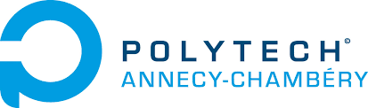

jdcoffre@gmail.com
jdcoffre@gmail.com in/jdcoffre
in/jdcoffreAs a passionate tech worker, I have developed a strong technical background, management skills, and a good business vision. Today, I am leading the customer services teams at Sonar (leader of code quality and security).
I worked in different types of organizations (AGILE, flat, holacratic, vertical). As a team leader, I have learned the importance of balancing high-quality delivery and the necessary space for creativity and collective intelligence. I love working on technical challenges in environments that foster teamwork and innovation.
Sonar's valuation has gone from a few millions to more than 4.7 billion dollars since I joined. Leading a business unit of such a fast-growing and successful company taught me a lot. Choosing my battle, delivering and transforming an organization at the same time. I am proud I created solid technical teams in Europe and the USA that support the big names of the software industry.
Skills
- Basics of many programming languages, main DevOps tools, issue investigation, root cause analysis, and collaboration with engineering teams
- Staffing, defining objectives, creating a team dynamic based on collective intelligence, and delivery
- Customer relationship management, technical support, incident management
- Collaboration with business teams and the board, identifying and addressing business frictions
Work Experience
Head of Services

Sonar needs to accelerate its growth. Technical customer services are handled by Support and consulting teams. The main challenges for the teams are to scale the demand and to cover the entire customer journey. Based on my experience in leading the support team, I become the Sonar Head of Services.
Responsibilities
- Define a consistent customer service strategy that contributes to company's vision
- Team recruitment and people care
- Scale team processes and improve cross-team collaboration
- Report to the CEO and company's board
Main achievements
- Rework hiring and new joiners onboarding processes
- Define SLAs and implement scalable processes
- Improvement of services timezone coverage
- Define complementary customer services between pre-sales, support, and consulting
- Coordinate activities with the Marketing, Sales, and the Engineering teams
Impact
- The Services team has been multiplied by 3 over the past 2 years
- We have reduced the time to hire from many months to a few weeks
- New joiners' onboarding duration shrank from 36 to 12 weeks
- Coverage of the European and the US timezone
- Reduce team time to answer and the time to close customer cases
- 93% customer retention year over year
Support Engineer
The development team and the CEO are providing most of Sonar's customer support. As a user, I am a strong believer of Sonar's products and I am already training development teams to use them. I joins the company as the only support engineer.
Responsibilities
- Support the deployment and the use of Sonar's products
- Limit the exposure of development teams and the CEO to customers
- Collaboration with development teams on product fixes and features roadmap
Main achievements
- I turned email communication into a ticketing system to improve efficiency and collaboration
- I played an active role in team recruitment as an interviewer and then as a hiring manager
- I created a knowledge-sharing and onboarding program to bring new teammates up to speed
- I created customer issues workflows, issues prioritization, and defined team SLAs
- I contributed to major product features that improved our product
Impact
- Customers support with 27 different programming languages and most mainstream DevOps platforms
- Growing the team from 1 to 7 people
- Move from a process of a few hundred email threads per year to about 4600 cases in 2019
- Creation of an onboarding process that inspired other teams in the company
DevOps Engineer

- Training development teams on DevOps best practices
- Creation and management of the company's DevOps pipeline
- Tooling development
Main achievements
- Contributed to the first standardized CI pipeline of the company
- Onboarding of several teams in Europe and the USA
- Creation of the first OpenSource project in the company
Java Developer
- Development following an Agile methodology
- Collaboration within an international team
- Modular and Bus architecture
Education
-
Master’s Degree in Engineering: software engineering and systems and organizations theory2006 - 2009
-
Preparatory classes in Physics & Mathematics2004 - 2006
-
High school diploma in Sciences2004
Languages
French: Native
English: Bilingual
Personal interests and activities
- I am the happy secretary of my village's association
- I like food, wine, and beer; I love cooking for my friends and my family
- I love being connected to nature by doing long walks with my dog and gardening
- I like doing sports in general; I used to play handball; I run, swim, and bike regularly
- I ride a motorcycle and play the guitar from time to time